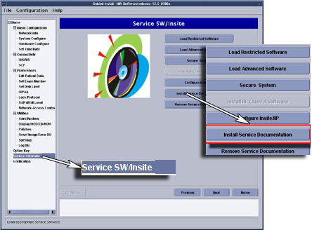

Operating Documentation
Direction 5133315-3, Rev# 14
Signa EXCITE HD 1.5T Service Methods
Module Version 1.0, Version Date 4/27/07
Operating Documentation |
| NOTE: | The process for loading the Service Methods onto the system disk takes 17 minutes. |
1. Verify that you have the proper Service Methods CD. Must match software release and field strength (1.5T or 3.0T).
2. Go to the Service Desktop and start the Common Service Browser if it is not already running. Select [Configure tab], then select Guided Install, [FE mode]. Then Click here to [start this tool]. The password is operator.
3. Select Service [SW/Insite]. Insert the Service Methods CD into the CD ROM drive in the PC. Click on Install [Service Documentation] Button. See Illustration 1. Documentation install should take about 17 minutes.
Illustration 1: Loading Service Documentation

4. If you wish to remove the Service Documentation, click on [Remove Service Documentation] button. The removal should take 30 seconds.